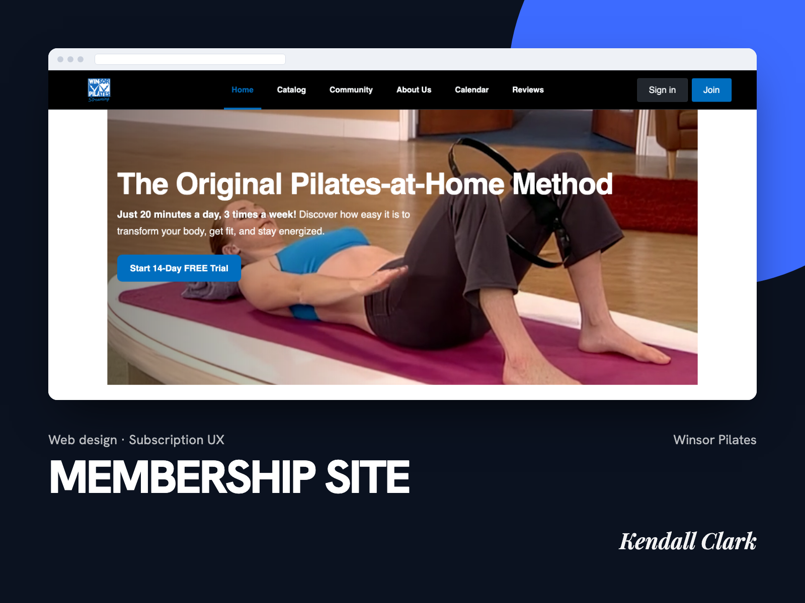
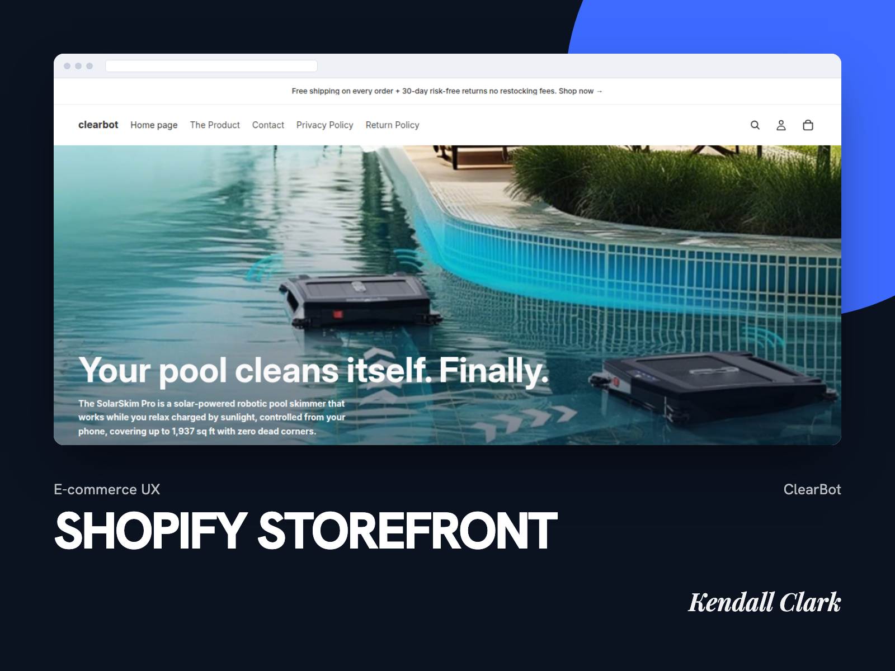
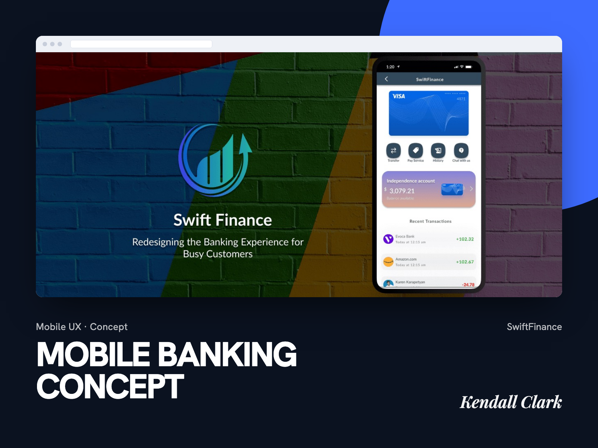
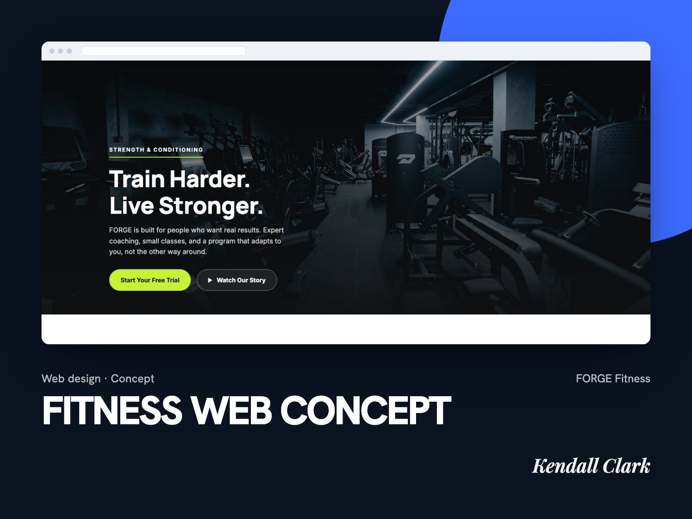

/01 Work
Fifteen projects, fifteen constraints.

American Express, Fraud Investigation PlatformEnterprise UX, fintech
- Tools
- Figma, FigJam, Jira
- Skills
- Enterprise UX, stakeholder interviews, heuristic evaluation, journey mapping, usability testing, design systems, fintech

Towpath CRM, Agents on the TeamAI product, live
- Stack
- JavaScript modules, Supabase (Postgres, row-level security, edge functions), Netlify
- Models
- Claude through Claude Code agents; Gemini, Groq, OpenRouter, and Cerebras selectable in settings
- Tools
- Claude Code, MCP
- Skills
- Product design, information architecture, data modeling, security by design, AI agent UX, report design

Towpath Studio, Site Builder with AIAI tool, live
- Stack
- JavaScript, Monaco editor, Netlify edge functions
- Models
- Kimi K2.6, Cohere North Mini Code, served through OpenRouter and Cloudflare Workers AI
- Tools
- Claude Code
- Skills
- AI product design, streaming UX, prompt and context design, model evaluation

Agent Teams That Check Each OtherAI systems, tested
- Stack
- Claude Code subagents, Markdown agent specs
- Models
- Claude
- Tools
- MCP: Canva, Figma, Netlify, Ahrefs, Semrush; Google Maps scraper
- Skills
- Multi-agent design, permission design, prompt engineering, verification workflows, data schema design

Video Pipeline, Made in CodeAI pipeline, live
- Stack
- Node.js, Remotion (React), YouTube Data API v3, Kokoro text-to-speech
- Models
- Gemini 2.5 Flash-Lite, Claude Haiku
- Tools
- Canva (thumbnails)
- Skills
- Motion graphics, pipeline design, YouTube SEO packaging, voiceover timing

Prospecting and Reporting ToolAI audit tool, confidential
- Stack
- Next.js, Supabase, Vercel
- Models
- User-selectable engines: Claude Haiku, ChatGPT, Grok, DeepSeek, Gemini, Groq
- Tools
- Mailchimp, Semrush and Ahrefs data, ScraperAPI, Resend
- Skills
- SaaS UX, CSV import, AI audits, email and newsletter design, cost visibility

Links, Community Social PlatformMobile UX, iOS
- Tools
- Figma, usability testing
- Skills
- Mobile UX, iOS design, user research, UX audits, stakeholder communication

Max Noir, Creator WebsiteWeb design, live site
- Stack
- HTML, CSS, JavaScript, Netlify (forms, scheduled functions)
- Tools
- Claude Code, Apify, TikTok embeds
- Skills
- Visual design systems, creator brand UX, accessibility, content architecture, spec-first workflow

Nina's Cleaning ServiceBrand, web, local SEO
- Stack
- HTML, CSS, JavaScript, Netlify
- Tools
- Google Analytics 4, Search Console, Google Business Profile
- Skills
- Local SEO, technical SEO, schema markup (LocalBusiness, FAQPage), brand identity, copywriting

Haus of Alt, Brand and StoreBrand identity, e-commerce
- Stack
- Shopify custom theme
- Skills
- Brand identity, e-commerce UX, art direction, product page design

Nu-Fix, Contractor WebsiteWeb design, local SEO
- Stack
- HTML, CSS, JavaScript, Netlify, GitHub
- Tools
- Schema.org structured data (GeneralContractor, RoofingContractor)
- Skills
- Local SEO, information architecture, responsive design, client revision rounds

Winsor Pilates, Membership SiteWeb design, subscription UX
- Stack
- Uscreen page builder
- Skills
- Landing page design, subscription and trial UX, information architecture, conversion design

ClearBot, Shopify StorefrontE-commerce UX
- Stack
- Shopify, Remotion for short-form video
- Skills
- E-commerce UX, storefront design, conversion copy, short-form video

SwiftFinance, Mobile Banking ConceptConcept, mobile fintech
- Tools
- Figma, FigJam
- Skills
- Mobile banking UX, user research, concept design, prototyping

FORGE Fitness, Web ConceptConcept, web design
- Stack
- HTML, CSS, JavaScript (no framework, no build step)
- Skills
- Web design, front-end development, visual redesign iteration, responsive build
Have a product that needs clarity?
Open to full-time roles, contract engagements, and select freelance projects.
Get in touch